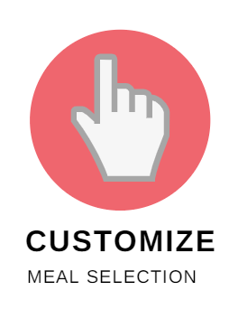
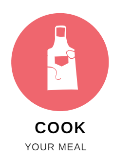

<section class="py-5" id="introduction">
  <div class="container">
    <div class="pb-5 d-flex justify-content-center">

      <h2>
        So... What's <span class="theme-color">Cooking?</span>
      </h2>

    </div>
    <div class="copywrite d-flex justify-content-center">
      <p class="text-center">
        In Singapore, many of us want to cook healthy, delicious meals daily with our own customizations and flavour profile, but
        we often do not have the luxury of time to shop for specific daily ingredients and search up endless recipes. With RedApron,
        you no longer have to worry about not being able to prepare your own meals again.
        <i class="fa fa-smile-o"></i> - CEO Dr Matthea Loo (D.C.Sc)
      </p>

    </div>
    <!-- <div class="how-to-use">
      
    </div> -->
    <div class="row">
      <div class="col-sm"></div>
      <div class="col-sm"></div>
      <div class="col-sm"></div>
      <div class="col-sm"></div>
    </div>
  
  </div>


</section>